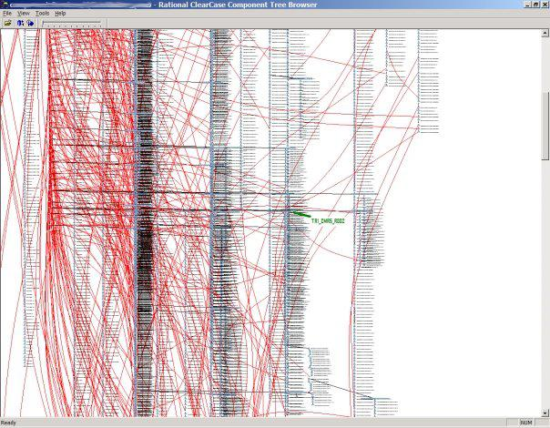

Learning DVCS Workflow - 0
If you take look at the revision history for some of my projects on GitHub, you'll see that I have a fairly messy track-record!
A few times I have successfully used Magit's ability to interactively stage/unstage Hunks or parts of Hunks, to make my commits a bit more clean and sensible, but not always.
The real problem is: I haven't been using Branches. It's because I haven't studied how to use them effectively, and in the past they've been scary.
But for the future, and especially for my dotfiles, I'd like to be able to read through the commits and make sense of them after. Also I'd like to be sure when I'm committing that I don't make any unplanned master changes and break things.
I also tend to work by myself on these projects, but I'll often go on a tangent, or start a blog post and then put off finishing it while another, different idea is developed and maybe even published first. Ideally I should be able to track these things separately.
So I need to learn: how to do revision control workflow with branches, properly.
NOTE:- This is not a how-to. I don't know what I'm doing. Yet. I haven't tested anything either, just taking notes today.
Branching and merging?! Halp!
To be honest my past experience with Microsoft Visual SourceSafe, Rational ClearCase, and even Subversion is that, while the idea of separating concurrent streams of work into branches makes total sense, in practice branching and then merging branches is a difficult, error prone and risky operation!
That's putting it lightly. Have a look at this screen shot I took from a past employer. The vertical trees are branches, each node is a commit/revision, the red lines are merges (or rebases, I can't remember, it was about ten years ago):

I still get nightmares!
So, that's where I'm coming from. My notes here are what I'm exploring online to try and get somewhere with branching that's not like that.
Step 0, pick an RCS
I used to HATE Git. I still do hate it's command-line interface, but Magit makes it a joy to use, and exposes the many weird and whacky functions of git in a way that you can begin to understand it. It's reference manual is pretty darn awesome too.
All the cool kids use Git, including my workplace. I'm starting to get used to it. Doing my own projects with it helps a lot.
I've been reading the Magit User Manual, and the Git bible: Pro Git. The chapter on Branching has some example workflows but doesn't try to proscribe a particular one, which makes sense.
Now, though, I'm looking for some guidance on policy, not just mechanism.
Step 1, what are some workflows people use?
- The pictures in this article by Vincent Driessen look more like what I want to do:
(get the high-quality original, suitable for printing, from the article)
I like it a lot, actually, and will read it through properly. At first glance it's a lot like the GitHub Flow (which I've also only skimmed).
Also my online friend Alec the Geek is a git evangelist and has lots of useful information about git which I should read: http://alecthegeek.github.io/
Step 3, pick one workflow to examine
I'm looking at Vincent Dreissen's workflow first, I'll call it:
The Driessen Flow
Because, why not?
Vincent Driessen documents a successful git branching model that looks attractive.
Consists of two kinds of branches
- main branches (long lived; master and development)
- supporting branches (short lived; feature/merge/fix)
Main branches
Driessen uses two long-lived branches (I think like those mentioned in Pro Git).
-
master: stable releases. Merges fromdeveloponly -
develop: this is where supporting branches merge to
Supporting branches
Supporting branches are used to contain commits for:
- features
- releases
- bugs
These are short-lived branches that end either by merging to develop or by being removed (dead-ends).
Feature branches
- may branch from
develop - MUST merge back to
develop - branch naming: anything except
master,develop, orbug-*
Typically exist in local/developer repos, not in origin.
Creating a Feature branch
$ git checkout -b myfeature develop
Or Magit:
-
b l [el]
(magit-branch-checkout), enter a new branch for "myfeature" and then pick "develop" as the starting point.
Merging finished feature to develop
$ git checkout develop $ git merge --no-ff myfeature $ git branch -d myfeature $ git push origin develop
I like the --no-ff: always creates a new commit of the merge, not fast-forwarding.
This avoids losing information about the historical existence of a feature branch and groups together all commits that together added the feature
So, because of the non-fast-forward, you can still see the branch in the history, even after you delete the branch.
With Magit
-
m -n i
(magit-merge-into), (typing -n before i to turn on--no-ff); and choose "develop
That's it, I think:
This command merges the current branch into another local branch and then removes the former. The latter becomes the new current branch.
I'm not sure what this next bit means, exactly. It seems to be concerned about remotes though, so it probably doesn't matter for local branches?
Before the source branch is merged, it is first force pushed to its push-remote, provided the respective remote branch already exists. This ensures that the respective pull-request (if any) won’t get stuck on some obsolete version of the commits that are being merged. Finally, if magit-branch-pull-request was used to create the merged branch, then the respective remote branch is also removed.
Release branches
- may branch from
develop - MUST merge to
develop, ANDmaster - branch naming:
release-*
This is where you do last-minute "dotting of i's and crossing of t's", or for merging in minor bug fixes before merging the release → develop → master.
The Driessen flow recommends that you branch merge from develop to master by making a release- branch, and there, before merging that back to develop, then to master. This is interesting too:
It is exactly at the start of a release branch that the upcoming release gets assigned a version number—not any earlier. Up until that moment, the develop branch reflected changes for the “next release”, but it is unclear whether that “next release” will eventually become 0.3 or 1.0, until the release branch is started. That decision is made on the start of the release branch and is carried out by the project’s rules on version number bumping.
Creating release branches
With git:
$ git checkout -b release-1.2 develop- Do some version change, e.g. with a
bump-version.sh 1.2or similar $ git commit -a -m "prepared release version 1.2"
With Magit
-
b l
(magit-branch-checkout), enter a new branch for "release-1.2" and then "develop" as the starting point. - Do some version change, like with git
-
c c
(magit-commit), enter a commit message "prepared release version 1.2", pressC-c C-c
Finishing a release branches
- Merge release to
master - Tag the commit on
master - Merge release to
develop - Delete the release branch
With git:
$ git checkout master
$ git merge --no-ff release-1.2
$ git tag -a 1.2
$ git checkout develop
$ git merge --no-ff release-1.2
$ git branch -d release-1.2
With Magit:
-
b b
(magit-checkout)and choose "master" -
m m
(magit-merge)and choose "release-1.2" -
t t -a
(magit-tag)and enter "1.2" -
b b
(magit-checkout)and choose "release-1.2" -
m -n i
(magit-merge-into)and choose "develop"
Bugs
Or "hotfixes", but whatever. They're changes that need to be made to master after a release tag. So that's a bug. Short-term branch. I guess the bug's "hot" because it can't wait for it's turn in the develop stream.
I made a small change to the naming here, because Driessen's examples are confusing to me: surely you'd name your bug or "hotfix" branch after the issue number, not the future release tag?
- May branch from:
master - MUST merge into
developandmaster - Branch naming:
bug-*
creating a bug branch
With git:
$ git checkout -b bug-ABC master- bump the version
$ git commit -a -m "vesion 1.2.1"- make the fix, test etc.
$ git commit -m "fix servere production bug ABC"
With Magit
-
b l
(magit-branch-checkout), enter new branch "bug-ABC" and then "master" as the starting point - bump the version
-
c c -a
(magit-commit), enter "version 1.2.1" - make the fix, test etc.
-
c c
(magit-commit), enter "fix severe production bug ABC"`
Finishing a bug branch
Need to merge into master, but also into develop, to keep the fix in the development stream. Same as a release, except if there is a current release- branch, then merge back to that instead of to develop.
With git:
$ git checkout master
$ git merge --no-ff bug-ABC
$ git tag -a 1.2.1
$ git checkout develop
$ git merge --no-ff bug-ABC
$ git branch -d bug-ABC
With Magit:
-
b b
(magit-checkout)and choose "master" -
m m
(magit-merge)and choose "bug-ABC" -
t t -a
(magit-tag)and enter "1.2.1" -
b b
(magit-checkout)and choose "bug-ABC" -
m i
(magit-merge-into)and choose "develop"
What I learned this afternoon
- There's more than one way to skin this cat. This is one way, I like it, I'll look at more.
- The only difference between a "long-life" branch and a "short-term" is that you delete the short ones with
git branch -d <somebranch>(or(magit-merge-into)), but leave the long-term ones alone.